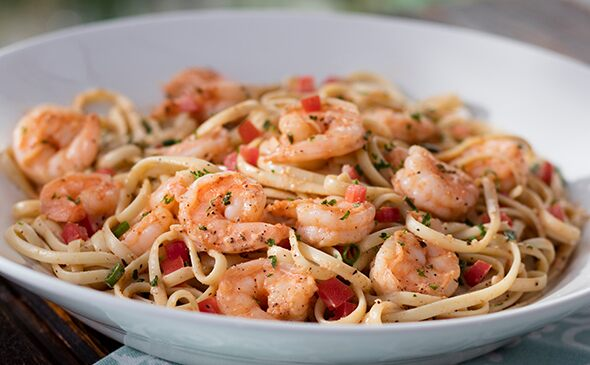

Calypso Shrimp Pasta

Description
This recipe, courtesy of Bahama Breeze, will get your heart beating like a steel
drum!
Ingredients
- 1/2 tsp salt and pepper
- 12 oz wt shrimp, medium size, peeled and deveined
- 4 oz wt butter
- 1/2 cup green onions, sliced thin
- 1 cup calypso broth
- 1/2 cup heavy cream
- 3 cups linguine or spaghetti, cooked
- 4 tbsp tomatoes, diced
Calypso Broth:
- 1/2 cup chicken broth
- 1/2 cup clam juice
- 1 clove garlic, chopped
- 2 tbsp blackening seasoning
- cayenne pepper, to taste
- 1 tsp thyme, dried
Steps
- Place all the calypso broth ingredients in a bowl and mix well with a wire whip,
then cover and refrigerate until needed.
- Season the shrimp with salt and pepper while heating a skillet with the butter
added.
- Add the shrimp and scallions; cook until they begin to turn opaque.
- Add the calypso broth and cream.
- Bring this to a boil and reduce until the sauce starts to thicken slightly, add
the pasta.
- Cook for an additional 2 minutes to heat the pasta.
- Garnish with diced tomatoes and enjoy!